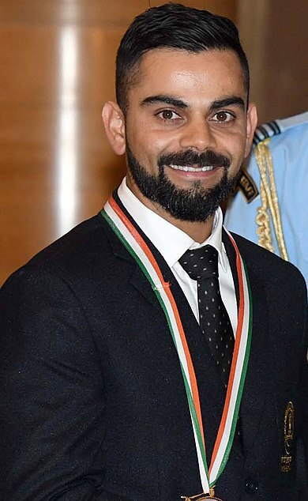

Virat Kohli
Captain of Indian Cricket Team

Virat Kohli at Rashtrapati Bhavan
Heres a timeline of Virat Kohli's Life:
- 2002- Born on 5th of November in New Delhi, India
- 2003- Represented Delhi U-15
- 2004- Became the captain of Delhi U-15
- 2006- Delhi U-17
- 2008- Selected for India U-19 and averaged 105 in the series
- 2008- Captained the victorious India U-19 in the U-19 World Cup
- 2008- Included in Indian National Cricket Team for ODI Series
- 2011- Was part of the 2011 World Cup triumph
- 2012- Appointed Vice-Captain
- 2014- Test Captain after Dhoni's retirement
- 2016- ODI Captain
- 2016- Fastest to 7000 runs
- 2017- Fastest to 8000 runs
- 2018- 10000 runs before the age of 30
- 2018- Got married to Anushka Sharma
Carrying the hopes of 1.4 Billion people for winning an ICC Trophy
For more information about Virat click Wikipedia link